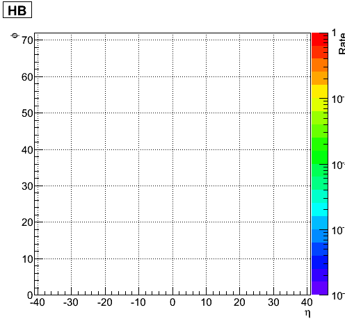
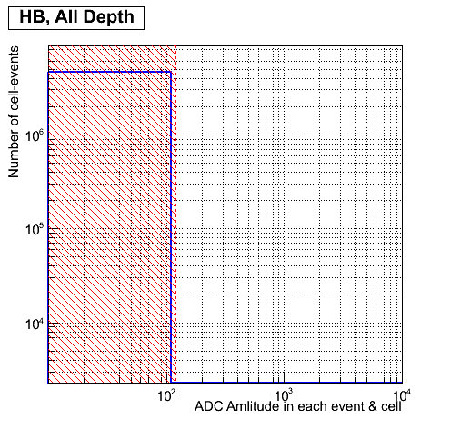
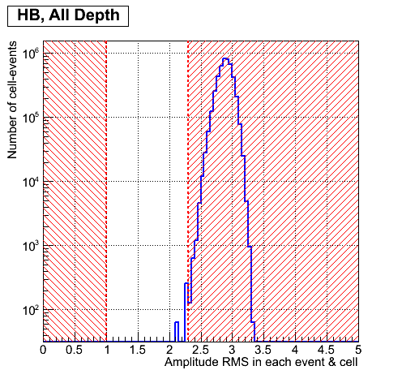
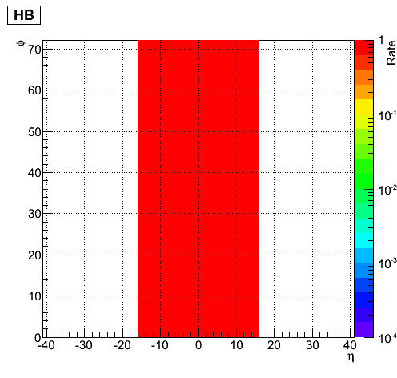
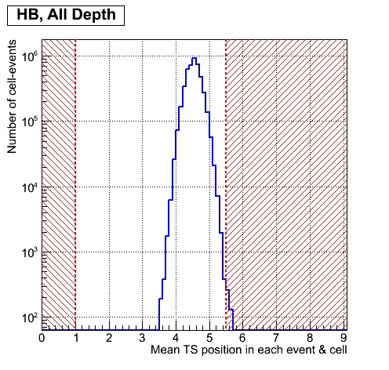
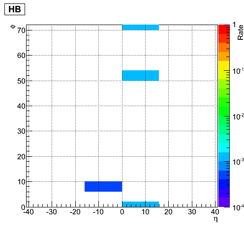
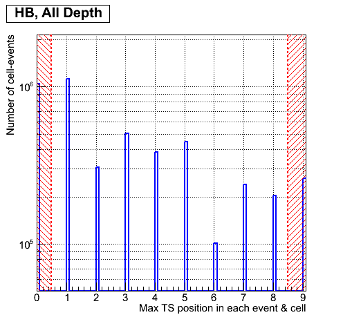
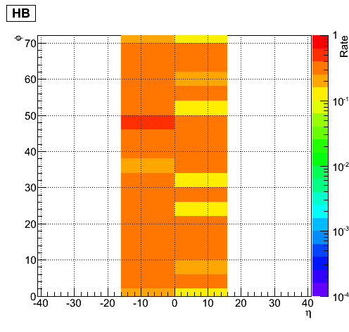

Criteria for calibration channels for HB, RUN = 225529
1.Cc criterion: CapID errors for each channel.
1.A. Rate of CapId failures in each channel for each depth.
Channel legend: white - good, other colour - bad.

2. Ac criterion: ADC amplitude collected over all TSs(Full Amplitude) for each channel.
2.A. Full ADC amplitude distribution over all events, channels and depths.
Legend: Bins less 120 correpond to bad ADC amplitude

2.B. Rate of bad ADC amplitude (<120) in each channel for each depth.
Channel legend: white - good, other colours - bad.

3. Wc criterion: RMS (width) of ADC amplutude for each channel.
3.A. W distribution over all events, channel and depth.
Legend: Bins less 1 and more 2.3 correpond to bad RMS

3.B. Rate of bad W (<1,>2.3) in each channel for each depth.
Channel legend: white - good, other colour - bad.

4. Rc criterion: Ratio ADC value sum over five near maximum (-2, -1, max, +1, +2) TS to ADC value sum over all TS for each channel.
4.A. Ratio distribution over all events, channels and depths.
Legend: Bins less 0.6 and more 1.05 correpond to bad ratio

4.B. Rate of bad Ratio (<0.6, >1.05) in each channel for each depth.
Channel legend: white - good, other colour - bad.

5. TNc criterion: Mean TS position for each channel.
5.A. TN position distribution over all events, channels and depths.
Legend: Bins less 1 and more 5.5 correpond to bad position

5.B. Rate of bad TN position (<1, >5.5) in each channel for each depth.
Channel legend: white - good, other colour - bad.

6.TXc criterion: Maximum TS position for each channel.
6.A. TX position distribution over all events, channel and depth.
Legend: Bins less 0.5 and more 8.5 correpond to bad position

6.B. Rate of bad TX position (<0.5, >8.5) in each channel for each depth.
Channel legend: white - good, other colour - bad.
